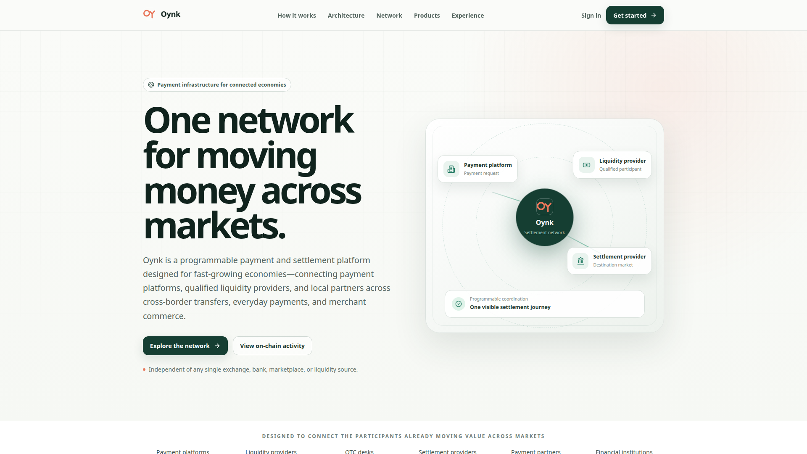
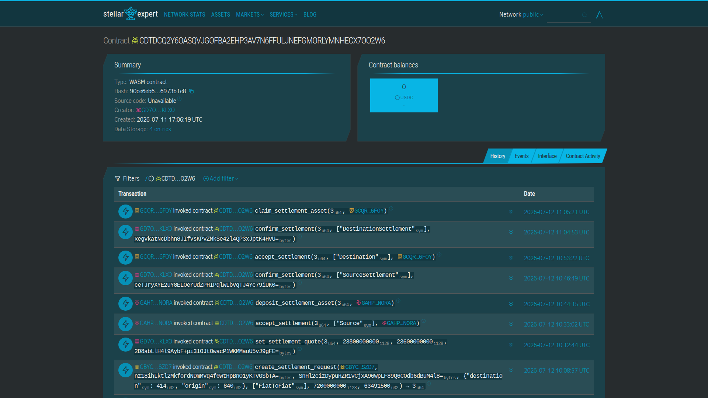
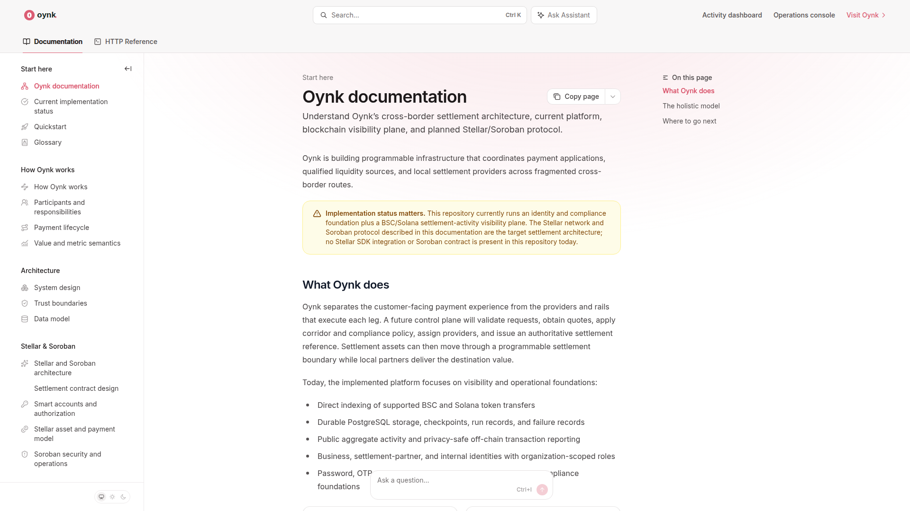

High-volume businesses still pay through fragmented banking, FX, liquidity and payout relationships.
Sequential dependencies and manual confirmation.
Every layer adds a spread or fee.
One leg can succeed while another remains unresolved.
Qualified providers compete on capacity, price and execution.
Competition reduces dependence on one provider's economics.
Every fiat and on-chain leg shares an authoritative reference.

USDC settlement principal
completed request lifecycles
The MVP demonstrates quotes, provider participation, escrow funding, confirmations and claims on Stellar mainnet.
Proof of execution—not a claim of audited production readiness or independent fiat finality.

A business can opt in to deploy a bounded share of excess USDC. Funds needed to honor active rate locks remain immediately available.
Yield and principal are not guaranteed.
A corridor activates only under the applicable approvals and/or regulated-partner arrangements. KYC does not substitute for licensing.

Permissioned liquidity. Standardized access. Programmable settlement. One visible commercial payment journey.
combined off-chain and on-chain activity
recorded payment transactions
recorded alongside off-chain commercial payments
Direct experience with fragmented liquidity, FX pricing, manual provider coordination, payout fulfillment, delays and reconciliation.